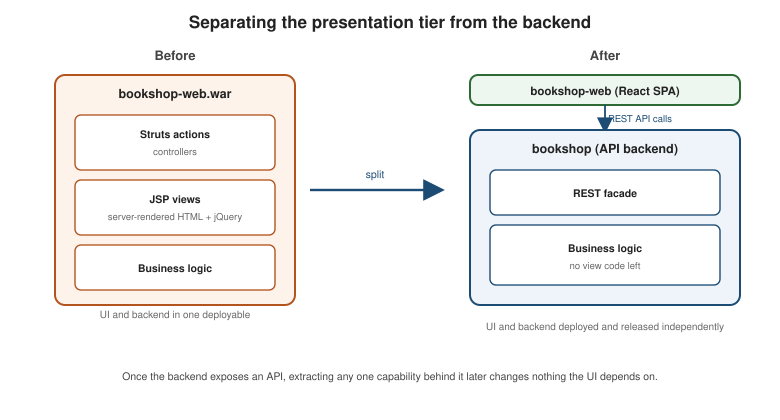

Migration Path: From a Legacy Stack to a Modern One
|
This content was generated with the assistance of AI and should be verified against the official documentation before being relied on in production. |
Migration Overview establishes the discipline every migration
path in this section shares — no big bang, the strangler fig, demonstrate value early. This page applies that
discipline to the specific situation of a legacy technology stack: a system built on tooling that is no
longer actively evolving, hard to hire for, or simply too far from the rest of the organization’s stack to keep
maintaining productively. Bookshop’s own legacy incarnation is the running example throughout: a Java EE 7
Struts 1 + JSP monolith (see Struts 1 (Classic) & Migration), bookshop-web.war, deployed to WebLogic, with pricing and tax computed by Oracle stored
procedures, an XML/SOAP integration with a supplier catalogue feed, jQuery sprinkled over server-rendered pages,
and a single monolithic Oracle schema underneath all of it. The target of this migration is the modernized
Bookshop used by every other page in this section: a Spring Boot 4.1 application (bookshop) on PostgreSQL.
Typical starting points and their modern targets
Legacy modernization rarely starts from a blank slate — it starts from a specific, well-known stack, and the first question is what that stack’s pieces map to on the other side. This table names the mapping Bookshop follows and links each target to the page that covers it in depth:
| Legacy starting point | Modern target |
|---|---|
Java EE / Struts / JSP / Spring 3-4 XML configuration |
Spring Boot (Bookshop’s own choice) or Quarkus for a smaller-footprint, cloud-native runtime. |
.NET Framework Web Forms / MVC 5 |
ASP.NET Core, following the dedicated migration guide already written for exactly this transition. |
jQuery-sprinkled, server-templated UI (JSP, Razor pages rendered server-side) |
A client-rendered SPA — React, Angular, or Vue — consuming the backend as an API rather than being rendered by it. |
SOAP / ESB integration |
REST or gRPC calls plus asynchronous messaging where the integration is not strictly request/response — Messaging covers the broker choices and delivery guarantees. |
Stored-procedure business logic (pricing, tax, discount rules living in the database) |
An application-layer domain model: the rules move into Java code that can be unit tested, versioned, and code reviewed like everything else, rather than living in a database object the application layer cannot see. |
Legacy ORM or raw JDBC with hand-rolled SQL |
Hibernate (or Spring Data JPA built on it), for mapped entities, a first-level cache, and portable query generation. |
COBOL batch and CICS programs on a mainframe |
Keep and wrap, rehost, refactor or rearchitect, chosen per workload — COBOL: Modernization Strategies compares the options and shows how to expose programs as APIs behind a strangler-fig facade. |
Ad-hoc deployment (manual WAR drops, a runbook a person follows by hand) |
Containers built by a CI pipeline and deployed automatically, so every deployment is repeatable and every build is traceable back to a commit. |
Not every row applies to every legacy system, and not every row has to move on the same timeline — the techniques below are exactly the tools for moving each piece independently, on its own schedule, while the system as a whole keeps running.
Techniques
Strangler fig with a reverse proxy or gateway
Migration Overview already names the strangler fig as the
default strategy for every migration in this section; for a legacy stack specifically, the strangler’s routing
seam is a reverse proxy or gateway placed directly in front of the legacy application. Every request Bookshop
receives arrives at that proxy first, which decides — by path, by an HTTP header, or by which cohort of users a
request belongs to — whether it is served by the still-standing bookshop-web.war or by the new bookshop
Spring Boot application growing up around it. API Gateway and
Backends for Frontends already covers the gateway itself in depth; this is that same seam, used specifically as
the legacy migration’s strangler routing point.
Three products implement this proxy in practice: YARP for a .NET-hosted proxy, NGINX as a general-purpose
reverse proxy, and Spring Cloud Gateway when the proxy itself is worth writing as a Spring Boot application
with programmable routing logic. All three can route by path (/catalogue/** to the new service, everything else
to the legacy WAR), by a header the client or an upstream load balancer sets, or by cohort — a percentage of
users, or a specific beta group, routed to the new path while the rest keep hitting the legacy application, so a
regression affects a bounded, known slice of traffic rather than everyone at once.
Separate the presentation tier from the backend first
Richardson’s second legacy-displacement strategy (Microservices Patterns ch. 13.2.2) is often the single highest-leverage first move available: before extracting any business capability at all, expose the existing business logic as an API, and rebuild only the UI on top of it as a SPA. For Bookshop, that means giving `bookshop-web.war’s Struts actions a REST facade — often a thin wrapper around logic that does not move yet — and replacing the JSP/jQuery pages with a React (or Angular, or Vue) SPA that consumes that facade instead of receiving server-rendered HTML.
This split is worth calling out explicitly because it is the exact seam Migration Path: From a Monolith to Microservices reuses later: once Bookshop’s UI talks to its backend only through an API, extracting any one capability behind that API into its own service changes nothing the UI depends on. Doing the presentation split first means the harder, capability-by-capability extraction work that follows never has to touch the UI again.
Branch by abstraction and parallel run
Two techniques from Fowler and ThoughtWorks’s legacy-displacement catalogue apply once a piece of legacy logic is being replaced in place rather than routed around:
-
Branch by abstraction introduces an interface in front of the piece of logic being replaced — the stored-procedure pricing call, say — with the legacy implementation behind it on day one. The new, application-layer implementation is built and tested behind the same interface, switched in behind a flag once it is trusted, and the old implementation is deleted only once nothing calls it. The application never has two divergent versions of the codebase to merge later, because both implementations live side by side under one abstraction the whole time.
-
Parallel run goes a step further for logic where correctness is critical enough to verify empirically: both the legacy stored procedure and the new pricing code execute on every request, their results are compared and logged, but only the legacy result is actually used until the new implementation’s output has matched it closely enough, for long enough, to trust in production. This is the technique of choice for exactly the kind of business rule — pricing, tax — that is easy to get subtly wrong and expensive to get wrong silently.
The anti-corruption layer
While the legacy Oracle schema and the new PostgreSQL-backed domain model coexist, code on the new side that
needs to read or write legacy data needs to do so without importing the legacy model’s own shape — its
table-per-column naming, its stored-procedure return codes, its lack of any real aggregate boundary — into the
new domain. Richardson’s anti-corruption layer (Microservices Patterns ch. 13.3.1) is exactly this
translation boundary: a dedicated adapter that speaks the legacy system’s protocol and data shapes on one side,
and the new domain model’s own types on the other, so nothing in bookshop’s new domain layer ever has to know
what the legacy Oracle schema actually looks like. For Bookshop, the anti-corruption layer sits between the new
`bookshop application and the legacy Oracle schema’s supplier-catalogue tables and stored procedures for as long
as both are in use, translating rows and procedure calls into Book and Price domain objects the new code
already understands.
Data synchronisation during the overlap
For as long as both the legacy Oracle schema and the new PostgreSQL database hold overlapping data — book catalogue rows during the strangler period, say — the two need to stay consistent with each other, and there are two structurally different ways to do it:
-
Dual writes: the application writes to both databases directly, in the same request. Simple to reason about, but it reintroduces exactly the dual-write problem Transactional Outbox already covers for events — there is no atomic guarantee across two separate databases, so a crash between the two writes leaves them disagreeing with no record of which one is right.
-
Change data capture (CDC): a tool such as Debezium tails the legacy Oracle database’s own transaction log and streams every committed change as an event, which a consumer on the new side applies to PostgreSQL. Because CDC reads only what the legacy database already committed, it never risks writing something the legacy transaction itself rolled back, and it needs no application code changed on the legacy side at all. Kafka Connect is the mechanism most Debezium deployments use to get those change events onto a Kafka topic a consumer on the new side subscribes to.
CDC is the safer default whenever the legacy system’s log-based change stream is available and the legacy application’s own code cannot be touched; dual writes are acceptable only for low-stakes, easily-reconcilable data where an occasional divergence is cheap to detect and fix.
Database Migration puts this into practice with Debezium: the Oracle connector on the legacy schema, a JDBC sink and Spring Boot consumers on the PostgreSQL side, verification, and the cut-over with reverse replication — see Worked Example: Oracle to PostgreSQL.
Incremental upgrades vs. strangling
Not every piece of a legacy stack needs strangling. Where the current framework is itself still evolving with a credible backward-compatibility story — Spring’s own major-version upgrades are the concrete example, each one documented with a migration guide precisely because the framework’s maintainers invest in not breaking existing applications outright — incrementally upgrading in place (Spring 3 XML configuration to Spring Boot autoconfiguration, one module at a time, without ever removing the deployable) can reach the modern target faster and with less risk than building a parallel strangler application around it. Strangling is the right tool when the current stack is no longer evolving at all (Struts 1 has had no meaningful new release in years; see What’s Changed & Migration) or when the gap between current and target is too large for an in-place upgrade path to exist.
Feature flags and cohort-based cut-over
Whichever technique moves a given piece of functionality, the actual moment of cut-over is controlled by a
feature flag: a runtime switch that decides, per request or per user cohort, whether the legacy or the new
implementation handles it. This is the same mechanism the strangler proxy’s cohort-based routing uses at the HTTP
layer, applied one level lower — inside a single request that has already reached the new bookshop application,
a flag can still choose between an old and a new code path for one specific piece of logic, independent of
routing. Rolling the flag from "legacy for everyone" to "new for a 5% cohort" to "new for everyone" gives every
cut-over a bounded blast radius and an instant rollback (flip the flag back) if something goes wrong.
Exit criteria for decommissioning the legacy system
A legacy strangler migration ends only when there is nothing left the legacy system does that the new stack does
not already do at least as well — and that has to be an explicit, checked list, not a feeling. Concretely, for
Bookshop’s bookshop-web.war, decommissioning is safe once:
-
Every route the strangler proxy previously forwarded to
bookshop-web.warnow resolves tobookshopinstead, confirmed by the proxy’s own routing configuration and its request logs showing zero traffic reaching the legacy application for a full business cycle. -
Every table in the legacy Oracle schema has either been migrated into the new PostgreSQL database or is confirmed to hold nothing the new system needs (audit or archival data that can be retained read-only, not live).
-
Any stored procedure or SOAP integration still called by anything outside
bookshop-web.waritself (a scheduled batch job, a partner integration) has an owner and a migration date of its own — an orphaned caller discovered after the legacy system is turned off is the single most common cause of a "final" decommission having to be reverted. -
A rollback plan exists and has been rehearsed for the decommission itself, not just for each individual cut-over along the way.
Only once every item on that list is checked does turning off WebLogic and dropping the legacy schema stop being a risk and start being simple cleanup.
Figures
The strangler proxy routing requests between the legacy WAR and the new Spring Boot application, by path:

A representative "week 0 to week N" plan for splitting Bookshop’s UI from its backend — the first move of the techniques above, and the seam the microservices migration path reuses:
| When | What happens |
|---|---|
Week 0 |
Add a REST facade in front of the existing Struts actions' business logic; no behavior changes, no UI changes yet — the facade exists but nothing calls it. |
Week 1-2 |
Build the new React SPA against the facade for one low-risk page (the book catalogue listing), served behind the strangler proxy under a feature flag, off by default. |
Week 3 |
Enable the flag for an internal cohort; compare behavior and performance against the existing JSP page for the same functionality. |
Week 4-6 |
Roll the flag out to a growing percentage of real users; extend the SPA to cover the next page (checkout) once the catalogue page’s rollout is stable. |
Week N |
Every page has been rebuilt against the REST facade and the flag is at 100%; the JSP views and their Struts
actions are deleted, leaving |